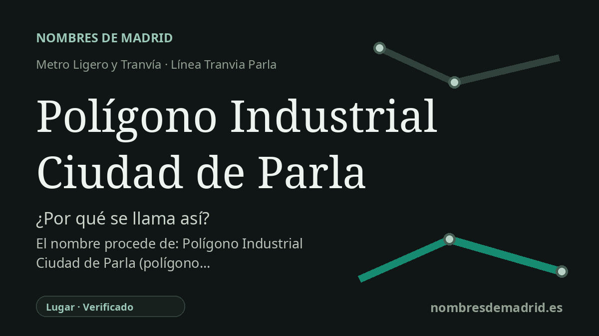

Publicado el · Investigación de Nombres de Madrid · Cómo verificamos cada origen · 8 fuentes consultadas
Respuesta rápida
Esta parada del tranvía lleva el nombre del Polígono Industrial Ciudad de Parla, el área industrial a la que da servicio en la calle Berlín. Abrió con el tramo Parque Parla Este-Polígono Industrial el 8 de septiembre de 2007.
La historia del nombre
El nombre de la estación es directo y descriptivo. **Polígono Industrial Ciudad de Parla** designa el polígono industrial llamado Ciudad de Parla, y el CRTM sitúa la parada en superficie en la calle Berlín, 52, dando servicio inmediato a esa zona de actividad y empleo.
En el uso urbanístico español, un *polígono* no es solo una figura geométrica. La RAE también lo recoge como una unidad urbana delimitada para un fin específico, con *polígono industrial* como ejemplo habitual. Por tanto, el nombre de esta estación no es conmemorativo: orienta al viajero hacia un ámbito industrial planificado.
El polígono forma parte de la transformación general de Parla. El municipio tenía poco más de mil habitantes a comienzos del siglo XX y vivió una gran expansión demográfica desde finales de los años sesenta. En la década de 2020 Parla superaba ya los 130.000 habitantes, lo que hizo cada vez más importantes el empleo local, los servicios próximos y las conexiones de transporte.
La cronología del tranvía ayuda a entender la importancia de esta parada. El tramo entre Parque Parla Este y Polígono Industrial Ciudad de Parla entró en servicio el 8 de septiembre de 2007, de modo que esta zona fue temporalmente uno de los extremos del tranvía en funcionamiento. El tramo posterior, entre Polígono Industrial Ciudad de Parla y Plaza de Toros, se abrió el 21 de mayo de 2008 y completó el recorrido circular.
El origen general del nombre está bien acreditado, pero conviene tratar con cautela algunos detalles secundarios. Una información de 2011 que cita al Ministerio de Fomento indica que SEPES había desarrollado en Parla un parque empresarial de unas 30 hectáreas, mientras que comentarios locales sitúan el origen del polígono Ciudad de Parla hacia 1988. Por ello, la etimología inmediata de la estación está verificada, pero la cronología exacta del desarrollo del polígono requiere consultar un expediente urbanístico o de SEPES antes de afirmarla con plena seguridad.